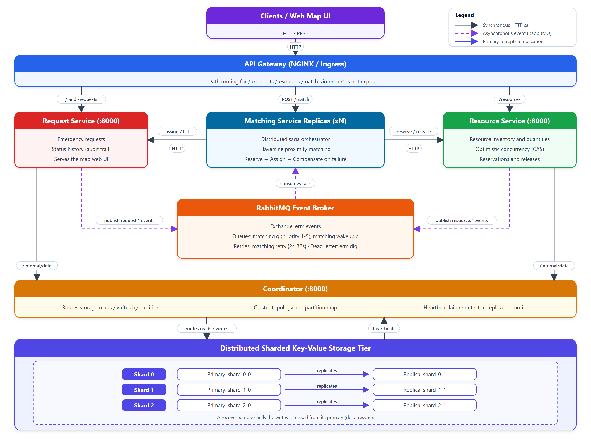

main (application, Docker, Kubernetes) | feature/cloud (everything in main + Ansible cloud deployment)In major humanitarian crises, rapid, reliable, and fair matching of emergency supplies (potable water, food, medicine, evacuation transport, shelter) to victims is vital. Traditional monolithic architectures suffer from single points of failure, bottlenecked database locks, and catastrophic geographic over-allocation under concurrent request spikes.
The Distributed Emergency Resource Matching System is an end-to-end cloud-native platform designed to tackle emergency coordination at scale. The platform ingests high-volume emergency requests and resource registrations asynchronously, prioritizes life-threatening requests using message broker priority queues, determines the nearest matching supply depot using great-circle (Haversine) distance calculations, and coordinates atomic assignments via a distributed saga orchestrator without distributed 2-phase commit locking.
At its core, the platform operates on top of a custom-designed, sharded, replicated, self-healing distributed key-value storage tier. The architecture guarantees zero data loss, durable cancellations, and no resource over-allocation, backed by an automated chaos-testing suite that verifies system invariants under continuous live process termination.
The system follows a microservice architecture communicating via synchronous REST APIs at the ingress edge and asynchronous message streaming in the matching core:

POST /requests specifying item type, needed quantity, urgency level (1 to 5), and geographic coordinates (latitude, longitude).matching.q with message priority set equal to the request urgency. Critical medical requests bypass lower-urgency requests in the queue.ASSIGNED with assigned resource ID and computed distance.UNMATCHED and enters delay-specific retry queues. When new inventory is registered or freed, wake-up events trigger re-matching.| Component | Architecture & Role | Implementation & Cloud Engineering |
|---|---|---|
| Docker & Containerization | Microservice containerization ensuring identical behavior in local development and cloud production. | One unified Dockerfile on python:3.12-slim with the uv package manager, parameterized via the SERVICE build argument (one image per service, shared services/common layer). Dependency layer caching and unprivileged non-root user execution. docker-compose.yml reproduces the full topology locally. |
| Kubernetes (Minikube) | Container orchestration, declarative self-healing, automated scheduling, and traffic routing. | Full manifest suite in k8s/: stateless Deployments (Request, Resource, Matching, Coordinator), StatefulSets with PersistentVolumeClaims for the storage shards and RabbitMQ, NGINX Ingress controller, and cluster ConfigMap. |
| Horizontal Pod Autoscaler (HPA) | Elastic scaling responding dynamically to real-time disaster request surges. | HPA on matching-service scales from 2 up to 5 pods when average pod CPU exceeds 50% of its request, pulling metrics via the Kubernetes metrics-server. Matching pods are stateless competing consumers, so extra pods add throughput directly. |
Ansible (branch feature/cloud) | Infrastructure as Code (IaC) configuration management: one command turns a fresh Ubuntu VM into a running copy of the whole system. | Playbook ansible/site.yml runs four idempotent roles. common: installs Docker and base packages and removes the Oracle image's blanket iptables REJECT rules. k3s: installs single-node Kubernetes (k3s) with Traefik Ingress, metrics-server and local-path storage. app: ships the committed code (git archive), builds the 5 service images on the VM, generates the RabbitMQ password, applies the same k8s/ manifests and waits for rollout. smoke_test: checks the landing page and API over the public IP. Run with make cloud-deploy. |
| Cloud Principles | High availability, fault isolation, and graceful degradation. | Strict adherence to 12-Factor cloud principles: configuration through environment variables, stateless compute tiers, explicit dependency isolation, concurrency via process scaling, failure isolation across distinct shards, and crash-only idempotency. |
| RabbitMQ Broker | Asynchronous event bus and decoupled workload distribution. | Priority queues (x-max-priority: 5), Dead Letter Exchange (erm.dlq), and per-delay backoff queues (matching.retry.2s..32s) eliminating head-of-line blocking. |
| Sharded Storage Tier | Distributed partitioned key-value store with synchronous replication. | Keys are hashed (SHA-1) into 12 fixed partitions mapped across 3 physical shards, so re-balancing moves whole partitions only. Single-leader replication (1 primary, 1 replica per shard). Each node is a versioned SQLite store in WAL mode with compare-and-set writes and versioned delete tombstones. |
| Coordinator Node | Cluster health monitoring and failover arbiter. | Central heartbeat monitor (heartbeat interval 2 s, suspect after 4 s, dead after 6 s). Automated failover promoting in-sync replicas. Rebuilds the partition map from heartbeats after a restart and powers the live web operations dashboard. |
| Method | Endpoint | Category | Purpose & Behavior |
|---|---|---|---|
POST | /requests | Public API | Creates an emergency request (type, quantity, urgency 1-5, lat/lon). Enqueues to RabbitMQ. Returns 201 Created. |
GET | /requests/{id} | Public API | Fetches request status (PENDING, ASSIGNED, UNMATCHED, FULFILLED), assigned resource, and audit history. GET /requests lists requests, filterable by status and type. |
PUT | /requests/{id}/status | Public API | Updates status. Setting CANCELLED triggers saga compensation releasing allocated inventory back to the depot. |
POST | /resources | Public API | Registers a supply depot (name, location, total capacity quantity, item type). Returns 201 Created. |
GET | /resources/{id} | Public API | Retrieves depot inventory, remaining available quantity, and list of active allocations. GET /resources lists resources, filterable by type and status. |
PUT | /resources/{id}/status | Public API | Administrative status updates: toggle online/offline state or restock additional inventory quantity. |
POST | /match/{requestId} | Public API | Triggers a manual, synchronous on-demand matching evaluation for a specific request ID. |
GET | /internal/cluster | Diagnostics | Exposes cluster topology: active nodes, partition maps, heartbeat ages, and replication sync status. |
GET | /internal/queues | Diagnostics | Real-time RabbitMQ metrics: queue depths, unacked messages, consumer count, and in/out throughput. |
GET | /internal/locate/{key} | Diagnostics | Inspects data partitioning: resolves key → partition number → physical shard → primary/replica URLs. |
GET | /internal/verify | Diagnostics | Scans all shards, computes state digests, and verifies primary/replica consistency. |
GET | /dashboard | Operations UI | Interactive cluster visualization rendered by the Coordinator, showing shard status and partition mapping. |
Emergency-Response-System/
├── services/ # application microservices (Python 3.12, FastAPI)
│ ├── common/ # shared: amqp, config, errors, geo, http, logging, models,
│ │ # partitioner, retry, storage_client
│ ├── coordinator/ # cluster.py (failure detector), router.py, dashboard.html
│ ├── matching_service/ # saga.py, strategies.py (nearest / balanced), policies.py
│ ├── request_service/ # domain.py (state machine), service.py, static/index.html (map UI)
│ ├── resource_service/ # domain.py (reserve / release), service.py
│ └── storage_node/ # store.py (versioned SQLite store), replication, resync
├── k8s/ # Kubernetes manifests (namespace, config, RabbitMQ, coordinator,
│ # storage StatefulSets, services, ingress, HPA)
├── deploy/gateway/nginx.conf # NGINX API gateway used by Docker Compose
├── scripts/
│ ├── chaos.py # chaos-testing harness (random node kills + 6 invariants)
│ ├── ui_e2e.py # browser end-to-end check
│ ├── demo/ # demo scripts 00 ... 10
│ └── cloud-tunnel.sh # [feature/cloud] SSH tunnel to the cloud cluster
├── tests/
│ ├── unit/ # domain, router, saga, storage, tier-2 policy tests
│ └── integration/ # end-to-end tests against a running stack
├── ansible/ # [feature/cloud] cloud deployment (IaC)
│ ├── site.yml # playbook: common -> k3s -> app -> smoke_test
│ ├── group_vars/all.yml # versions, service list, RabbitMQ credentials lookup
│ ├── inventory.ini.example # VM address template
│ └── roles/{common,k3s,app,smoke_test}/tasks/main.yml
├── docs/ # architecture.png and report source
├── Dockerfile # one image per service (SERVICE build argument)
├── docker-compose.yml # full local topology (12 services)
├── Makefile # up, test, chaos, k8s-*, cloud-* targets
├── pyproject.toml / uv.lock # dependencies
├── README.md
└── Project_Report.pdf # this reportmain — the complete application with Docker Compose and Kubernetes (Minikube) deployment.feature/cloud — the same project plus the ansible/ directory for deploying to a cloud VM.# 1. Start all 12 services: RabbitMQ, coordinator, 6 storage nodes, 3 services, gateway
docker compose up -d --build
# 2. Verify all containers are healthy and operational
docker compose ps
# 3. Access UIs in your web browser:
# - Interactive Map & Public API: http://localhost:8080 (or :8085 if configured in .env)
# - Cluster Health Dashboard: http://localhost:8090/dashboard
# - RabbitMQ Management Console: http://localhost:15672 (guest / guest)
# 4. Stop containers and purge local persistent storage volumes
docker compose down -v# 1. Initialize Minikube with sufficient resources & add-ons
minikube start --cpus=4 --memory=6g
minikube addons enable ingress
minikube addons enable metrics-server
# 2. Build images on the host and load directly into Minikube
make k8s-build
# 3. Apply all declarative Kubernetes manifests and await rollouts
make k8s-deploy
make k8s-status
# 4. Expose services via local port-forwarding
make k8s-gateway # Gateway on localhost:8080
make k8s-dashboard # Dashboard on localhost:8090/dashboard
make k8s-rabbitmq # RabbitMQ Management on localhost:15673feature/cloud)# 1. Switch to the branch that contains the ansible/ directory
git checkout feature/cloud
# 2. Create the VM (Ubuntu 22.04/24.04, ports 22 and 80 open), then put its IP in the inventory
cp ansible/inventory.ini.example ansible/inventory.ini
# 3. One command installs k3s, builds the images on the VM and deploys everything (~10 min)
make cloud-deploy # app is then live at http://<vm-ip>/
# 4. Control the cloud cluster from the laptop over SSH (kubectl, demos, tests, chaos)
make cloud-tunnelThe core course problem statement specified basic request-resource matching. In our implementation, we extended the system with critical real-world cloud engineering capabilities:
nearest and balanced (distributing load across multiple nearby depots) algorithms.x-max-priority: 5). Critical medical needs jump ahead of general supply inquiries automatically.If-Match headers. Under a high-concurrency test of 50 concurrent requests targeting a depot with 10 units, exactly 10 were assigned and 64 write conflicts were cleanly resolved without any over-allocation.matching.wakeup.q that awakens waiting requests.GET /internal/locate/{key} exposes the deterministic partition hash for any entity.Rather than merely asserting fault tolerance, we authored an automated Chaos Engineering Harness (scripts/chaos.py). The harness streams continuous client traffic while randomly executing process kills against storage primary and replica nodes. This testing exposed 9 subtle distributed systems flaws that were systematically diagnosed and fixed:
| # | Identified Flaw | Root Cause & Distributed Failure Mode | Engineering Resolution & Verification |
|---|---|---|---|
| 1 | Unconditional IN_SYNC Resync Race | A node completing delta resync set its status to IN_SYNC unconditionally, overwriting a STALE status assigned during a transient write failure. Resulted in a replica silently lacking writes. | Enforced strict state-machine transition: only a node in SYNCING state is permitted to transition to IN_SYNC. Verified by unit test. |
| 2 | Stale Replica Election & Data Loss | When a primary died while its replica was STALE, the coordinator elected the stale replica based on raw version count. When the former primary rebooted, it resynced from the stale node, deleting acknowledged data. | Implemented Election Safety Rule: Coordinator refuses to elect a stale node; the shard enters temporary unavailable state until the last known primary rejoins. |
| 3 | Write Racing Failover Split-Brain | A write in flight during failover was accepted by the old primary, missed the new primary, but was acknowledged as successful (HTTP 201) to the client. | Writes now replicate to all available shard peers; storage clients reject writes with HTTP 503 unless acknowledged by the active primary. |
| 4 | False Failovers on Slow Reads | Transient CPU or disk latency caused read timeouts, triggering the client to declare the node dead and force unnecessary coordinator failovers. | Failovers trigger exclusively on hard network disconnections (ConnectionRefused / ConnectionReset). Timed-out writes trigger idempotent read repair. |
| 5 | Saga Phantom Compensation | A network timeout during the Assign step was misclassified as an assign failure, triggering compensation that released quantity even though the assign succeeded upstream. | Refactored saga to perform idempotent retries on timeout, re-read on conflict, compensate only on definitive domain failure, and resume from held reservations. |
| 6 | Thundering Herd Wake-Up Storm | A newly registered supply triggered wake-up scans for all 50 waiting requests, causing ~37 redundant write conflicts and saturating coordinator CPU. | Bounded wake-up matching strictly to the quantity of newly registered units and coalesced rapid burst wake-up events. |
| 7 | Dead-Lettering Benign Cancels & 504s | Cancelling a request that had never been assigned, as well as transient HTTP 504 gateway timeouts, routed messages directly into the Dead Letter Queue. | Separated permanent errors from transient timeouts: cancels on unassigned items are safe no-ops; 504s are requeued with backoff. |
| 8 | Synchronous RabbitMQ Publish Hangs | During RabbitMQ restarts, synchronous publishing calls blocked the FastAPI event loop, freezing HTTP workers until the Ingress timed out. | Configured non-blocking publish timeouts (2 s) with graceful degraded response (queued_for_matching: false) while a background reconciler backfills. |
| 9 | HTTP Keep-Alive Timeout Skew | Uvicorn server keep-alive was set to 5 s while client HTTP connection pools used a longer default. Sockets were closed by the server mid-handshake, causing intermittent 502s. | Tuned Uvicorn server keep-alive to 75 s, strictly exceeding client socket reuse timeouts and eliminating false 502 connection resets. |
quantity_total - sum(active_allocations).PENDING status.GET /internal/verify verifies that primary and replica state digests match identically across all shards.Retry-After HTTP headers on 503s. Prevents stampeding herd effects when nodes fail over or when the coordinator restarts.The Distributed Emergency Resource Matching System demonstrates that high-throughput, fault-tolerant distributed systems can be designed and operated using lightweight, self-contained cloud technologies. By combining event-driven messaging, distributed sagas, consistent-hash sharding, and rigorous chaos engineering, the system reliably coordinates emergency disaster relief under extreme operational conditions. The full source code is available at github.com/SartMa/Emergency-Response-System (branches main and feature/cloud).